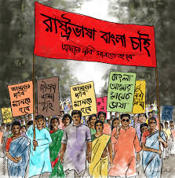

About The Language Movement On 1952
In 1952, a momentous protest took place in East Pakistan (now Bangladesh) over the demand for Bengali to be recognized as a state language. This protest marked a tragic and significant chapter in the history of language and national identity. It was the only time in history when people laid down their lives in a struggle for language, which later became a defining moment for the Bengali language movement. These brave individuals, often referred to as the "Language Martyrs" or "Language Soldiers," sacrificed everything to protect and promote the importance of their mother tongue, Bengali. Their actions sparked a nationwide movement that eventually led to the establishment of Bengali as one of the state languages of Pakistan. Today, their legacy continues to be honored, with people remembering their courage and sacrifice. Here are some of the remarkable individuals who played a key role in this historic struggle for linguistic and cultural rights.
The language soldiers of bangladesh
Oli Ahad (1927–2012)

Oli Ahad was a prominent Bangladeshi politician and language activist during the Bengali Language Movement. Born in Islampur village, Brahmanbaria District, he became involved in politics in the 1940s. He participated in the Language Movement, was arrested multiple times, and played a key role in organizing protests. Ahad also served as the editor of Ittehad and chaired the Democratic League party. He was awarded the Swadhinota Padak in 2004 for his contributions. He passed away on October 20, 2012
Abdul Motin (1926–2014)
Abdul Motin (1926 – 21 February 2014) was a Bangladeshi language activist and a prominent participant in the Bengali Language Movement. He was one of the student leaders who played a crucial role in organizing protests and rallies during the movement. He was born in 1926 in Faridpur, British India (now Bangladesh). He was a student at Dhaka University during the Language Movement and actively participated in the protests of 1952. He was arrested and imprisoned for his involvement in the movement. After the independence of Bangladesh, Abdul Motin continued to work for the development of the country and remained involved in politics. He was also a social worker and contributed to various educational and cultural initiatives. Abdul Motin passed away on 21 February 2014 in Dhaka, Bangladesh.

Kazi Golam Mahbub(1927-2006)

Kazi Golam Mahbub (1927 – 13 February 2006) was a Bangladeshi language activist and a prominent student leader during the Bengali Language Movement of 1952. He played a significant role in organizing protests and demonstrations to demand the recognition of Bengali as a state language of Pakistan. Born in 1927 in Faridpur, British India (now Bangladesh), he was a student at Dhaka University during the Language Movement. Kazi Golam Mahbub was actively involved in the All-Party Central Language Action Committee and worked closely with other leaders to mobilize students and the public. After the Language Movement, he continued to contribute to the cultural and political development of Bangladesh. He passed away on 13 February 2006 in Dhaka, Bangladesh, and is remembered as a dedicated Language Soldier (Bhasha Sainik) who fought for the rights of the Bengali language and culture.
Abdul Gofur (1929–2024)
Abdul Gofur (1929 – 27 September 2024) was a Bangladeshi journalist, teacher, writer, and language activist of the Bengali Language Movement. He was one of the noted members of Tamaddun Majlish, an Islamic cultural organization that played a vital role at the start of the movement. He was born on 19 February 1929 in Pangsha, Greater Faridpur District (now Rajbari District, Bangladesh). He completed his secondary education in 1945 and higher secondary education in 1947. He later studied Bengali language and literature at Dhaka University. During the Language Movement, Abdul Gofur actively participated in protests and rallies. He was also a journalist and writer, contributing to various newspapers and magazines. In recognition of his contributions to the Language Movement, he was awarded the Ekushey Padak by the Government of Bangladesh in 2005. Abdul Gofur passed away on 27 September 2024, at the age of 95.

Gaziul Haque(1929-2009)